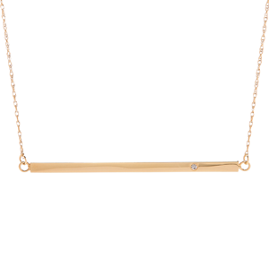
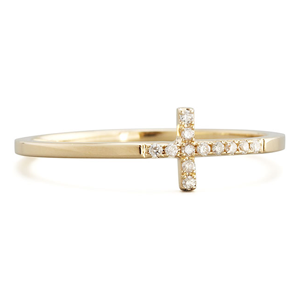
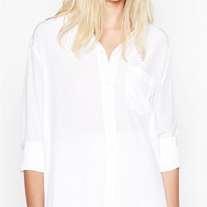
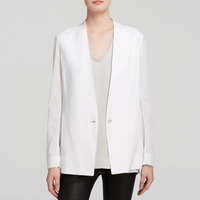
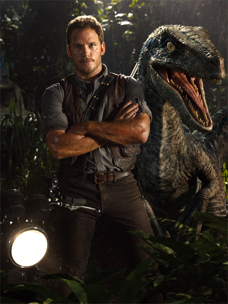
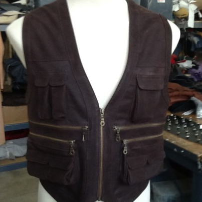
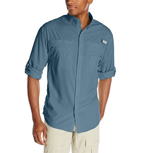
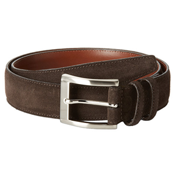
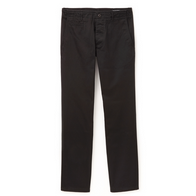

cocoon-img Prototype
Jurassic World




Jurassic World





swiftMark
socialShare
share to facebook
share to twitter
share to tumblr
share to googleplus
share to pinterest
share to blogger
share to mail